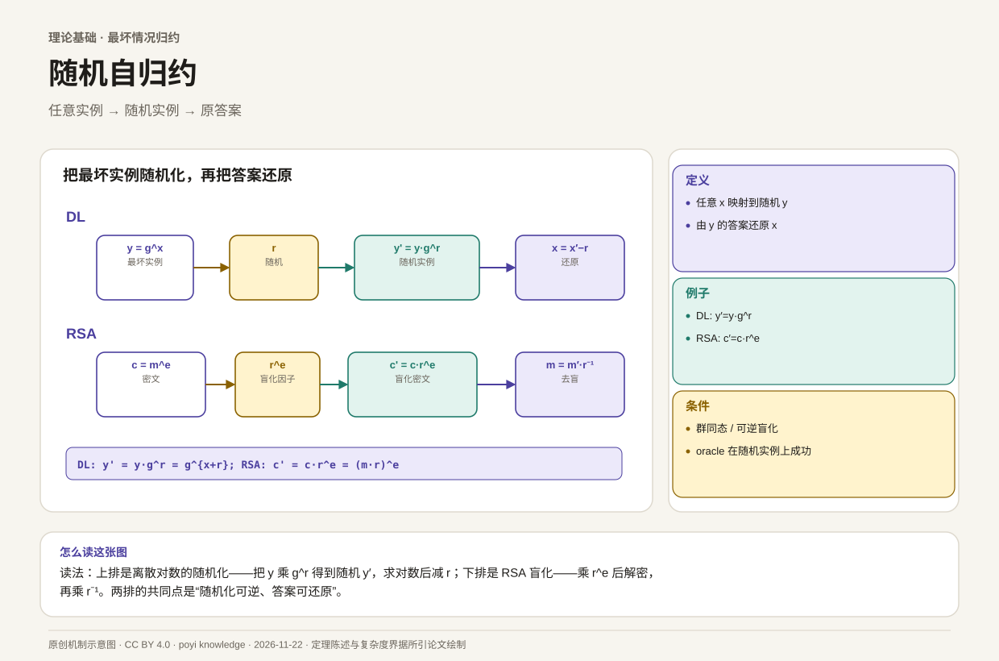
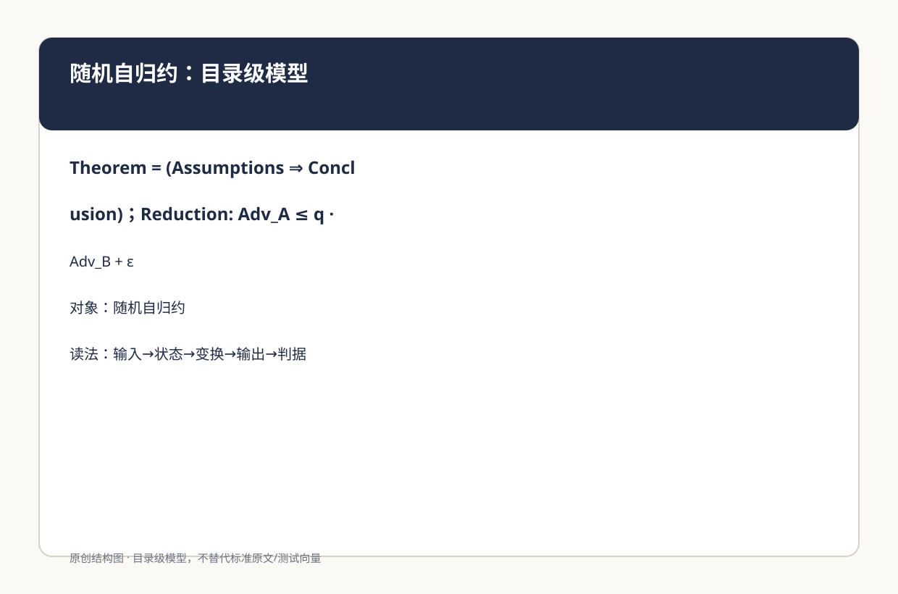

原理与机制
定理：随机自归约（Random Self-Reducibility）。### 把最坏实例随机化
设 f 是单向函数。若存在多项式时间算法 R，对任意 x 采样 r，输出 y=R(x;r)，使 y 的分布与 x 无关（通常接近均匀），并且给定 f(y) 与 r 可在多项式时间恢复 f(x)，则称 f 随机自归约。于是：只要 f 在平均随机实例上难，f 在每个实例上都难。### 离散对数
在阶为 q 的循环群 G 中，g 是生成元，y=g^x。取 r←Z_q，计算 y' = y·g^r = g^{x+r}。若 oracle A 能求 y' 的离散对数 x'，则 x = x'−r mod q。y' 在 G 中均匀分布，与 y 无关；一次随机实例的答案就还原了原实例。### RSA 盲化
对 RSA 公钥 (N,e)，密文 c=m^e mod N。取 r←Z_N^*，计算 c' = c·r^e = (m·r)^e mod N。若 oracle 能解密 c' 得到 m'，则 m = m'·r^{-1} mod N。r 可逆，盲化因子在模 N 上消去；这正是 RSA blinding 的代数基础。

为什么重要
密码学假设通常说“没有多项式算法能在最坏实例上求逆”；实际攻击者只需要在随机实例上成功。随机自归约把这两个世界连起来：平均实例上的成功可以搬到任意实例，反之最坏实例的困难会扩散到随机实例。### 为什么 RSA 实现需要盲化
盲化不仅隐藏消息，也让解密时间与密文无关：每次解密先乘随机 r^e，再在最后除掉 r。侧信道攻击者看到的中间值与真实 m 无关；这是随机自归约在工程中的直接用法。
应用与实例
- 从平均到最坏：DL、RSA、CDH 等代数问题常用随机自归约，把 worst-case 假设转成 average-case 假设。- 盲化：RSA 解密、签名前盲化，防止计时与选择密文侧信道。- 硬度放大：重复独立随机实例，把成功率 δ 放大到 1−(1−δ)^k；再配合纠错选择参数。

边界与攻击面
1.需要代数结构。随机化必须保持问题实例的同态关系；任意单向函数、散列函数没有这种结构。2.需要可逆盲化因子。RSA 的 r 必须在 Z_N^* 中；若 r 与 N 不互素，逆不存在，盲化失败。3.oracle 的成功率是平均的。若 oracle 只在某些随机实例上成功，重复采样可以把成功概率放大，但需要独立性或足够好的分布。4.不自动给出具体安全界。盲化隐藏了中间值，但不证明 RSA 本身安全；它把攻击面从“任意实例”移到“随机实例”。5.群阶与表示要对。离散对数在复合阶群、椭圆曲线群中的随机化形式不同；公式要按群运算重写。### 不是“随机化就能安全”
随机自归约是归约工具，不是防御本身。若底层问题在随机实例上也可解，盲化只增加常数开销，不改变可破性。
历史与背景
Blum 与 Micali 在 1984 年用离散对数的随机自归约构造伪随机位生成器：若能从随机实例预测下一位，就能解任意实例的离散对数。Goldwasser 与 Micali 把随机自归约视为 worst-case 到 average-case 归约的“王道”。### 从理论到实现
RSA 盲化在 1980 年代进入实现，用于防止计时攻击；后来选择密文安全与侧信道防护把它作为标准组件。随机自归约仍是 DL/RSA 类假设证明的标准第一步。
技术参数与复算边界
该条目的形式模型是 (\Pr[\mathrm{Bad}_A(\lambda)]\le \varepsilon(\lambda))。输入：输入：随机自归约的公开参数、密钥/随机数与消息；变量说明：Bad 为归约中定义的失败事件，ε 为可忽略函数。 预期输出：按 随机自归约 的规范执行后得到可验证的输出或可比较的优势界。 复算必须给出输入、步骤、输出和单位；示例只演示流程，不替代标准测试向量。
复杂度由密钥长度、分组/状态规模、轮数、随机数质量和敌手模型共同决定；参数越界、版本差异与实现侧信道都可能使公式结论失效。已登记限制：该条目只给出形式模型与可复算步骤，不声称已完成生产实现、侧信道认证或第三方安全评估。
逐步示例与核验
形式模型与复算步骤
[\Pr[\mathrm{Bad}_A(\lambda)]\le \varepsilon(\lambda)]
随机自归约的公开参数、密钥/随机数与消息；变量说明：Bad 为归约中定义的失败事件，ε 为可忽略函数。1.定义失败事件。2.构造归约把攻击者转成困难问题求解器。3.证明失败概率上界。边界：公式只覆盖已登记的参数与假设；参数取值、标准版本和实现细节仍以来源为准。
参考出处
- Wikipedia search entry for 随机自归约. https://zh.wikipedia.org/w/index.php?search=%E9%9A%8F%E6%9C%BA%E8%87%AA%E5%BD%92%E7%BA%A6
- Handbook of Applied Cryptography (Menezes, van Oorschot, Vanstone). https://www.cacr.math.uwaterloo.ca/hac/